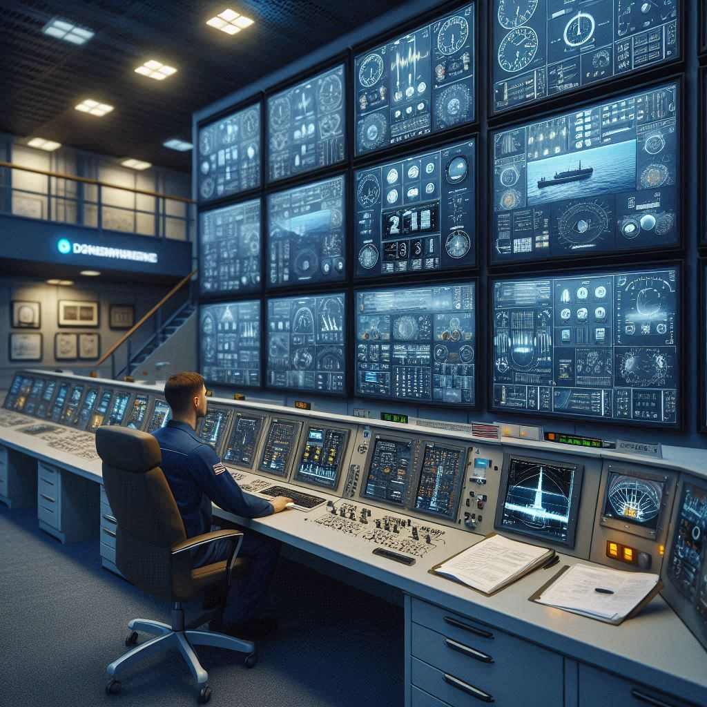

Piloto 5 MW — Fase 0 de Validación
🗣️ En lenguaje sencillo
¿Por qué un piloto? Para no invertir €70M basándonos solo en modelos teóricos. El piloto de 5 MW (a 250-300m de profundidad) valida que los cálculos coinciden con la realidad física.
¿Qué valida exactamente? La desgasificación real, el consumo de la bomba de vacío, la eficiencia de la turbina Pelton con agua salada y el comportamiento del sistema durante transitorios.
❓ Preguntas frecuentes
¿Dónde se ubica el piloto?
Se necesita una localización con 250-300m de profundidad a menos de 5km de la costa, con acceso a red eléctrica. Candidatos: costas de Huelva, Canarias o Alborán.
¿Cuánto tiempo dura la Fase 0?
22 meses: 6 de ingeniería y permisos, 10 de instalación, 6 de operación y toma de datos.
¿Qué pasa si el piloto no funciona como esperado?
Se analiza la desviación, se ajusta el diseño y se decide si escalar con las correcciones o pivotar a una arquitectura alternativa. Eso es exactamente para lo que sirve el piloto.
1. Objetivo del Piloto
La Fase 0 tiene como objetivo validar la física del sistema a escala 20%, confirmar números reales (CAPEX, OPEX, potencia) y obtener datos para la decisión de Fase 1.
2. Especificaciones Técnicas del Piloto
| Parámetro | Piloto 5 MW | Planta 26 MW | Factor escala |
|---|---|---|---|
| Potencia neta | 5 MW | 26.5 MW | 1:5.3 |
| Profundidad | 250-300 m | 500 m | — |
| Diámetro tubería | 1.0 m | 2.0 m | 1:2 |
| Caudal | 1.5 m³/s | 7.85 m³/s | 1:5.2 |
| Presión diferencial | 50 - 0.7 atm | 50 - 0.7 atm | 1:1 |
| Factor capacidad | 95% | 95% | 1:1 |
3. CAPEX Piloto (€9.2M Total)
| Componente | Costo (M€) |
|---|---|
| Tubería 300m (1.0m Ø) | 0.5 |
| Cámara presión diferencial | 0.8 |
| Turbina Pelton 5 MW | 2.2 |
| Bomba vacío (300 kW) | 0.4 |
| Generador + cable 5km | 1.5 |
| Instalación submarina | 2.0 |
| Ingeniería + testing | 0.8 |
| Contingencias 20% | 1.1 |
| TOTAL | €9.2M |
4. Cronograma (22 Meses)
Diseño de detalle, solicitud aprobaciones ambientales, estudios geotécnicos.
Costo: €1M
Fabricación tubería, cámara presión, turbina Pelton 5 MW, generador.
Costo: €4.5M
Buque especializado, equipo de buzos/ROVs, instalación y testing inicial.
Costo: €2.5M
4 meses de funcionamiento continuo, recopilación de datos, análisis y informe final Go/No-Go.
Costo: €1.2M
5. KPIs a Medir
5.1 Potencia
- Real vs teórica (error aceptable <15%)
- Eficiencia turbina (>85%)
- Factor capacidad (>90%)
5.2 Operación
- MTBF (disponibilidad >90%)
- Comportamiento real de mantenimiento (anillos, pig)
- Durabilidad componentes submarinos en 4 meses
5.3 Economía
- CAPEX real (error <20%)
- OPEX real (error <30%)
- Costos mantenimiento submarino reales
6. Criterio Go/No-Go
✅ GO a Fase 1 si:
- Potencia real ≥ 4.25 MW (85% de la predicción)
- Disponibilidad ≥ 90%
- OPEX dentro del ±30% estimado
- Sin problemas de hermeticidad críticos
- Diferencial presión estable ≥ 45 atm durante operación
❌ STOP / Rediseño si:
- Potencia < 3.5 MW
- Disponibilidad < 80%
- Corrosión inesperada acelerada
- Fallo estructural en cámara
- OPEX > 200% del estimado
7. Resultado Esperado del Piloto
Informe 50-100 páginas respondiendo:
- ¿Funciona? Sí/No con nivel de confianza
- ¿Números realistas? Validación CAPEX/OPEX real
- ¿Cambios de diseño necesarios para Fase 1?
- ¿LCOE real?
- ¿Riesgos operacionales emergentes no previstos?
- Decisión Go/No-Go clara a Fase 1

8. Financiación Fase 0
| Fuente | Importe | Probabilidad |
|---|---|---|
| Horizonte Europa (R&D) | €3-5M | Media |
| CDTI (España) | €2-3M | Alta |
| Junta de Andalucía | €1-2M | Alta |
| Capital riesgo CleanTech | €3-5M | Media |
| TOTAL NECESARIO | €9.2M |